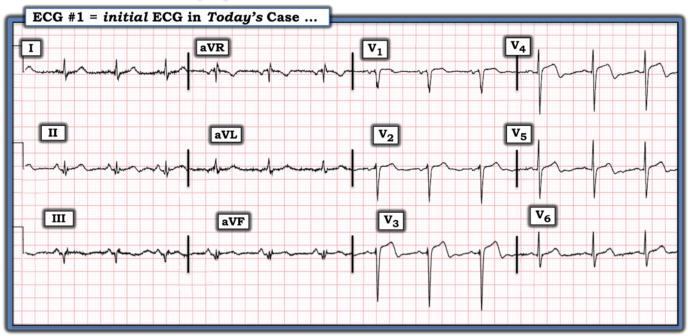
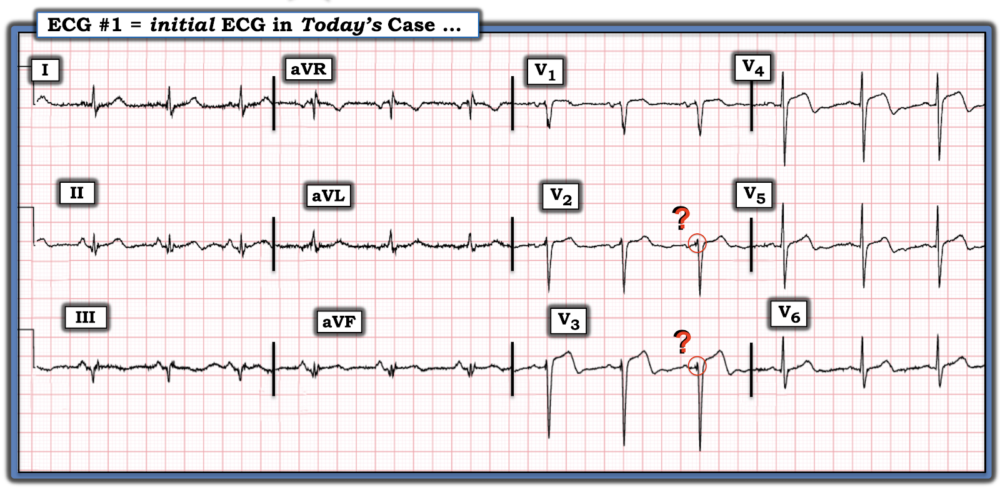
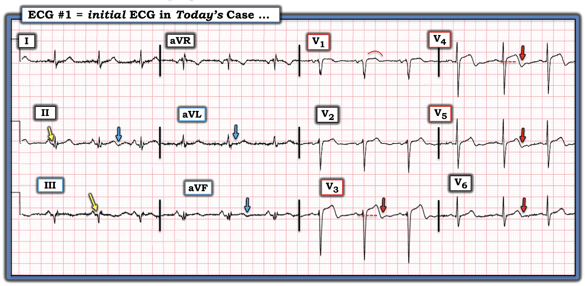
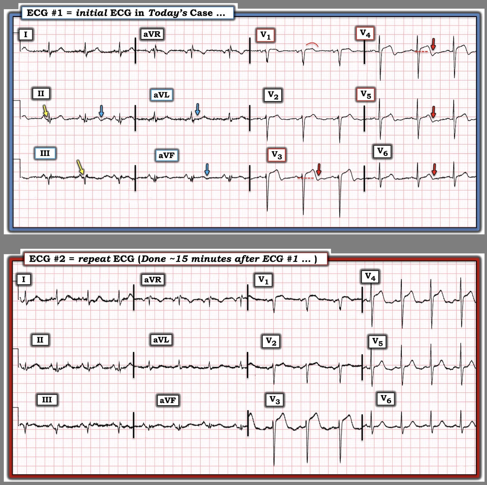

ECG Blog #505 — Mới? Cũ? hay Mới chồng lên Cũ?
Hình-1 là điện tâm đồ ghi từ một người đàn ông trung niên (?) trước đây khỏe mạnh — đến khoa cấp cứu — ED (Emergency Department) với tiền sử từng cơn CP (đau ngực — Chest Pain) trong những ngày gần đây, cơn cuối cùng xảy ra 1 ngày trước khi ghi điện tâm đồ dưới đây.
- Bệnh nhân không có triệu chứng và ổn định huyết động vào thời điểm ghi điện tâm đồ #1.
- Không có điện tâm đồ cũ để so sánh …
CÂU HỎI:
- Dựa trên bệnh sử nêu trên và điện tâm đồ ban đầu ở Hình-1 — Bạn có nên kích hoạt phòng thông tim (cath lab) không?
- Bệnh nhân này đã bị nhồi máu cơ tim (MI) chưa? Nếu có — Liệu điện tâm đồ ở Hình-1 có khả năng phản ánh một MI "mới"? — một MI "cũ"? — và/hoặc, một MI mới chồng lên một MI cũ?


Suy nghĩ của tôi về điện tâm đồ ở Hình-1:
Tôi không chắc chắn điều gì đang diễn ra từ bệnh sử và điện tâm đồ được trình bày ở Hình-1. Tôi cảm thấy ít nhất là cần thêm thông tin lâm sàng — so sánh với một điện tâm đồ cũ của bệnh nhân này — và một điện tâm đồ ghi lại để làm rõ.
- Nhịp ở điện tâm đồ #1 là nhịp xoang, tần số ~75/phút.
ĐIỂM THEN CHỐT (PEARL) #1:
Bản ghi này có RẤT NHIỀU nhiễu! Tôi thích ghi rõ sự hiện diện của nhiễu trong phần nhận định bằng văn bản của mình — vì nếu một số chi tiết của bản ghi không thể diễn giải được thì đó không phải là "lỗi của chúng ta".
- Ví dụ, ở bệnh nhân này, khi chúng ta đang cố xác định LIỆU đã từng có nhồi máu thành trước vào một thời điểm nào đó hay chưa — Những dao động nhỏ thêm vào thấy trong các vòng tròn ĐỎ ở chuyển đạo V2,V3 của Hình-2 có phải là "sóng Q giả" (pseudo-Q-waves) của nhồi máu cũ không? — hay — Những dao động nhỏ thêm vào này chỉ đơn giản là biểu hiện của nhiễu ở các chuyển đạo trước ngực?
- Đôi khi có thể — nếu bạn ghi lại điện tâm đồ — thì có thể giảm thiểu lượng nhiễu gây biến dạng bằng cách chú ý đến các chi tiết chuẩn bị bệnh nhân (tức là, Đảm bảo da sạch và khô; dây điện cực có thể bị lỏng; bệnh nhân có thể đang cầm một vật gì đó đang chuyển động; có thể dùng thêm một chiếc gối để giữ yên một chi đang run; thêm một tấm chăn có thể giảm run do lạnh; đặt lại vị trí một điện cực có thể giảm nhiễu cơ, v.v.).
- Điểm MẤU CHỐT: NẾU chúng ta sắp dựa vào đó để quyết định liệu bệnh nhân trước mặt có cần (hay không cần) thông tim hay không — thì điều thiết yếu là phải có được thông tin tốt nhất có thể. Vì vậy, NẾU nhiễu đang cản trở việc diễn giải tối ưu — Hãy sẵn sàng ghi lại điện tâm đồ ngay lập tức!


Tiếp tục diễn giải Hình-2:
Dù có nhiễu ở điện tâm đồ #1 — Chúng ta vẫn có thể diễn giải bản ghi này đủ để đưa ra nhận định.
- Ngoài nhịp xoang — Có thể nói các khoảng (PR-QRS-QTc) và trục trông bình thường.
- Về lớn các buồng tim — tiêu chuẩn điện thế cho LVH được thỏa mãn (tức là, tiêu chuẩn Peguero = Tổng sóng S ở V3 + V4 >28 mm — theo ECG Blog #73).
Về các sóng Q-R-S-T (mà tôi trình bày ở Hình-3):
- Thấy sóng Q ở chuyển đạo II và III (các mũi tên VÀNG ở những chuyển đạo này).
- Tăng tiến sóng R — hơi chậm. Tuy vậy — có các dao động dương đầu tiên nhỏ (tức là, sóng r) ở chuyển đạo V1,V2,V3 — với vùng chuyển tiếp (nơi sóng R trở nên cao hơn độ sâu của sóng S) cuối cùng xuất hiện giữa chuyển đạo V5-đến-V6. Vùng chuyển tiếp muộn này có thể có hoặc không có ý nghĩa lâm sàng.
Hình dạng sóng S
T-T
không bình thường ở các chuyển đạo trước ngực:
- Ở chuyển đạo V1 — ST dạng vòm (coving) kèm chênh lên nhẹ có vẻ "đồ sộ" một cách không tương xứng so với kích thước nhỏ của phức bộ QRS ở chuyển đạo này.
- Chuyển đạo V3 và V4 là những chuyển đạo bất thường nhất ở Hình-3 — với ST chênh lên hơn 1mm, đoạn khởi đầu ST thẳng đuỗn — và phần cuối sóng T âm.
- Phần cuối sóng T âm này tiếp tục một cách kín đáo ở các chuyển đạo trước ngực bên V5 và V6 (các mũi tên ĐỎ ở những chuyển đạo trước ngực này).
- Đánh giá các chuyển đạo chi khó hơn do nhiễu và kích thước phức bộ QRST nhỏ hơn — nhưng ngoài sóng Q ở chuyển đạo II,III đã nêu ở trên — còn có phần cuối sóng T âm ở chuyển đạo II và aVF, cùng ST dẹt ở chuyển đạo aVL (các mũi tên XANH DƯƠNG ở những chuyển đạo này).
Nhận định:
Với bệnh sử đau ngực từng cơn ở người đàn ông trung niên trước đây khỏe mạnh này — thật khó biết nên diễn giải điện tâm đồ ban đầu này thế nào, nhất là khi bệnh nhân ở trạng thái không đau vào thời điểm ghi điện tâm đồ #1.
- Tăng tiến sóng R kém — hình dạng sóng ST-T rõ ràng bất thường ở chuyển đạo V1 — cùng ST chênh lên đáng kể, rõ nhất ở chuyển đạo V3,V4 (ít hơn ở các chuyển đạo trước ngực khác) — gợi ý đã có nhồi máu thành trước vào một thời điểm nào đó. Tuy vậy — phần cuối sóng T âm ở chuyển đạo V3-đến-V6 (cũng như ở chuyển đạo II và aVF) gợi ý có một thành phần tái tưới máu, có thể phù hợp với một biến cố đã xảy ra vào bất kỳ thời điểm nào trong "những ngày gần đây" mà bệnh nhân này bị đau ngực từng cơn.
- Một khả năng khác — người đàn ông trung niên trước đây khỏe mạnh này có thể đã bị một MI thành trước cũ mà ông không biết (tức là, một MI "thầm lặng") — mặc dù tôi không nghĩ ST còn chênh lên nhiều đến vậy ở chuyển đạo V3,V4 do một nhồi máu cũ mà theo thời gian đã tiến triển thành phình thất trái.
- Cuối cùng — sóng Q ở chuyển đạo II và III (mũi tên VÀNG) — cùng với các bất thường sóng ST-T được đánh dấu bằng các mũi tên XANH DƯƠNG ở các chuyển đạo chi, có thể phù hợp với MI thành dưới cũ hoặc MI thành dưới gần đây.
- ĐIỀU CỐT LÕI: Điện tâm đồ ban đầu mà chúng ta thấy ở Hình-3 không phân biệt được giữa một MI cấp mới — với một MI gần đây hoặc cũ — với một MI cũ nay có thêm nhồi máu lan rộng gần đây hoặc cấp tính. Cần thêm thông tin.


==============================
Ca bệnh tiếp diễn:
Bệnh nhân vẫn không có triệu chứng. Dù vậy, các bác sĩ cấp cứu đã rất đúng đắn khi ghi lại điện tâm đồ khoảng 15 phút sau.
- Để thuận tiện so sánh 2 điện tâm đồ trong ca hôm nay — Tôi đặt cả hai bản ghi cạnh nhau ở Hình-4.
CÂU HỎI:
- Việc so sánh giữa điện tâm đồ ban đầu và điện tâm đồ ghi lại chỉ 15 phút sau — có cho chúng ta biết điều gì là mới so với cũ so với mới-chồng-lên-cũ không?


TRẢ LỜI:
Tôi xin nhấn mạnh rằng bệnh nhân hôm nay không đau ngực vào thời điểm đến khoa cấp cứu — và cũng không đau ngực 15 phút sau, khi ghi lại điện tâm đồ như ở Hình-4.
- ĐIỂM THEN CHỐT (PEARL) #2: Tôi không nắm được mọi khía cạnh của ca này. Thay vào đó — tôi chỉ biết rằng bệnh nhân "không có triệu chứng" vào thời điểm đến khoa cấp cứu, và vẫn không đau ngực vào thời điểm ghi lại điện tâm đồ ban đầu. Điều này đặt ra câu hỏi quan trọng: "Tại sao lại là lúc này?" (tức là, Có lý do nào giải thích TẠI SAO bệnh nhân đến khoa cấp cứu vào ngày này — mà không phải vào một trong những ngày trước đó khi ông bị đau ngực?).
- Đặt câu hỏi "Tại sao lại là lúc này?" có thể rất hữu ích để giải thích các thay đổi điện tâm đồ có thể thấy giữa các điện tâm đồ liên tiếp (tức là, Đôi khi bệnh nhân không kể về những thay đổi tinh tế trong triệu chứng cho đến khi được hỏi cụ thể).
Về Hình-4 — So sánh từng chuyển đạo một ...
- Rõ ràng có ST chênh lên nhiều hơn ở chuyển đạo V3,V4.
- Cũng thấy ST chênh lên tăng nhẹ ở chuyển đạo II,III,aVF; V1,V2.
- Phần cuối sóng T âm vốn có ở 6 chuyển đạo được đánh dấu bằng các mũi tên XANH DƯƠNG và ĐỎ ở điện tâm đồ #1 — nay không còn thấy nữa!
- Thay vào đó — nay có ST dẹt (nếu không nói là ST chênh xuống nhẹ) ở chuyển đạo V6!
- ĐIỂM THEN CHỐT (PEARL) #3: Đã có thay đổi sóng ST-T "động" (dynamic) trong 15 phút giữa lúc ghi điện tâm đồ #1 và điện tâm đồ #2. Dù vẫn chưa thể biết — khi chưa tìm được điện tâm đồ cũ — liệu đã từng có nhồi máu thành trước vào một thời điểm nào đó trong quá khứ hay không — giờ đây chúng ta biết chắc rằng một biến cố cấp đang tiến triển đang diễn ra! Cần thông tim ngay!
- ĐIỂM THEN CHỐT (PEARL) #4: Hình ảnh ở điện tâm đồ #2 gợi ý "xoáy trước tim" (Precordial Swirl) — dựa trên ST chênh lên dạng vòm ở chuyển đạo V1 — ST chênh lên rõ ở các chuyển đạo giữa ngực — và ST dẹt và chênh xuống ở chuyển đạo V6 (Xem ECG Blog #482 và ECG Blog #380 — để ôn lại chi tiết về xoáy trước tim). Hình ảnh điện tâm đồ này gợi ý mạnh mẽ tắc cấp đoạn gần LAD!
- ĐIỂM THEN CHỐT (PEARL) #5: Việc phần cuối sóng T đảo ngược từng thấy ở điện tâm đồ #1 nay đã biến mất — và được thay bằng ST chênh lên nhiều hơn (rõ nhất ở chuyển đạo V1,V3,V4) — cho chúng ta biết tổn thương "thủ phạm" đã tắc lại. Về lâm sàng, tình trạng động mạch "thủ phạm" tự tắc lại thường đi kèm đau ngực tái phát — nhưng ngay cả khi không có đau ngực trở lại, các thay đổi sóng ST-T động nay thấy ở điện tâm đồ #2 vẫn rất thuyết phục!
- ĐIỂM THEN CHỐT (PEARL) #6: Chính những thay đổi thuyết phục ở các chuyển đạo trước ngực nêu trên đã thôi thúc tôi xem kỹ lại một lần nữa các thay đổi ở chuyển đạo chi giữa 2 bản ghi ở Hình-4. Những thay đổi này thực sự kín đáo vì biên độ rất nhỏ của các phức bộ QRS ở chuyển đạo chi và lượng nhiễu đường nền lớn ở những chuyển đạo này — nhưng khi xem kỹ: i) Phần cuối sóng T đảo ngược không còn thấy ở chuyển đạo II,aVF; — ii) Sóng ST-T trông tối cấp hơn ở mỗi chuyển đạo thành dưới; — và, iii) ST chênh xuống soi gương (reciprocal) nhiều hơn ở các chuyển đạo bên cao I,aVL.
Thông tim được tiến hành nhanh chóng:
- Có bệnh nhiều nhánh mạch vành nặng. Đã nong bóng nhánh chéo thứ nhất (1st Diagonal) — và đặt một stent phủ thuốc ở đoạn gần LAD.
- Xét đến mức độ lan tỏa của các tổn thương trên thông tim — tôi nghi ngờ bệnh nhân "trước đây khỏe mạnh" này đã có bệnh mạch vành từ lâu mà phần lớn "thầm lặng", và nay đến viện với nhồi máu thành trước cấp.
==================================
Lời cảm ơn: Xin cảm ơn Chun-Hung Chen = 陳俊宏 (Thành phố Đài Trung, Đài Loan) đã chia sẻ ca bệnh và bản ghi này.
==================================
Các bài ECG Blog liên quan đến ca hôm nay:
- ECG Blog #205 — Ôn lại Cách tiếp cận hệ thống của tôi để đọc điện tâm đồ 12 chuyển đạo.
- ECG Blog #73 — Ôn lại "Quan điểm của tôi" về chẩn đoán LVH trên điện tâm đồ.
- ECG Blog #92 — Trình bày một góc nhìn khác về chẩn đoán LVH trên điện tâm đồ.
- ECG Blog #424 — Một ví dụ khác về trường hợp LVH rõ có thể biểu hiện ST chênh lên ở các chuyển đạo trước.
- ECG Blog #461 — Một ví dụ khác về chẩn đoán phân biệt giữa LVH với MI thành trước cấp với phình thất trái.
- ECG Blog #380 và Blog #482 — về "xoáy trước tim" (Precordial Swirl).
- Với các ca tương tự ca hôm nay, trong đó LVH có thể giống thiếu máu cục bộ — Hãy xem Bình luận của tôi ở cuối trang của các bài sau trong Dr. Smith's ECG Blog — bài ngày 29 tháng Mười Một năm 2023 — ngày 20 tháng Sáu năm 2020 — ngày 31 tháng Ba năm 2019 — ngày 29 tháng Ba năm 2019 — và bài ngày 27 tháng Mười Hai năm 2018.
- ECG Blog #218 — Ôn lại CÁCH xác định một sóng T là tối cấp?
- ECG Blog #230 — Ôn lại CÁCH so sánh các điện tâm đồ liên tiếp (tức là, "Bạn đang so táo với táo hay với cam?").

==================================
PHẦN BỔ SUNG (ngày 15 tháng 11 năm 2025):
- Để có Thêm Tài liệu — về diễn giải điện tâm đồ trong các OMI (không thỏa mãn tiêu chuẩn STEMI dựa trên milimét).

- Trong "My ECG Podcasts" — Hãy xem ECG Podcast #2 (ECG Errors that Lead to Missing Acute Coronary Occlusion — Những sai sót đọc điện tâm đồ dẫn đến bỏ sót tắc động mạch vành cấp). LƯU Ý: Mục lục có mốc thời gian của Podcast #2 này giúp nhanh chóng tìm được bất kỳ khái niệm then chốt nào bạn muốn ôn lại.
- Hãy xem ở gần đầu trang "My ECG Videos" , các video trong loạt MedAll ECG Talks của tôi ôn lại chẩn đoán MI cấp trên điện tâm đồ — và cách nhận biết OMI cấp khi không đạt tiêu chuẩn STEMI (được ôn lại trong ECG Blog #406 — Blog #407 — Blog #408).
- Xin LƯU Ý — Với mỗi video trong 6 video MedAll ở đầu trang My ECG Videos, NẾU bạn bấm vào "More" trong phần mô tả, bạn sẽ thấy Mục lục có liên kết cho phép nhảy thẳng tới phần bàn về từng điểm cụ thể (tức là, tại 5:29 trong video 22 phút của Blog #406 — bạn có thể nhảy tới "Bạn CÓ THỂ nhận biết OMI mà không cần dấu hiệu STEMI!" ("You CAN recognize OMI without STEMI findings!") ).
T.B. (P.S.): Về một ca bệnh đáng suy ngẫm, gây trăn trở, được bác sĩ tim mạch Willy Frick bàn luận — kèm Bình luận của tác giả do tôi viết ở cuối trang (trong bài ngày 17 tháng Ba năm 2025) — Hãy xem ca bệnh này.
- Như BS Frick và tôi đã nhấn mạnh — không chỉ "mô hình STEMI" hiện nay đã lỗi thời — mà trong những ca như ca chúng tôi mô tả, vì các bác sĩ đã chờ cho đến khi tiêu chuẩn STEMI cuối cùng được thỏa mãn — nên thông tim và PCI đã bị trì hoãn hơn 1 ngày.
- NHƯNG — vì phòng thông tim được kích hoạt trong vòng 1 giờ sau một điện tâm đồ cuối cùng đã đạt tiêu chuẩn STEMI — ca này sẽ được ghi vào các sổ đăng ký nghiên cứu là "rất thành công với việc kích hoạt nhanh phòng thông tim trong vòng 1 giờ kể từ khi xác định "STEMI". Cách diễn giải sai lầm này về diễn biến sự việc hoàn toàn bỏ qua thực tế lâm sàng là bệnh nhân này đã mất đi một cách không cần thiết một lượng cơ tim đáng kể, vì điện tâm đồ ban đầu (ghi >24 giờ trước đó) rõ ràng đã chẩn đoán STEMI(-)/OMI(+) nhưng không được xử trí vì các bác sĩ bị "mắc kẹt" vào phác đồ STEMI.
- Hậu quả đáng tiếc là tạo ra những "bằng chứng ủng hộ" sai lệch trong y văn, gợi ý tính đúng đắn của một mô hình đã lỗi thời và không còn chính xác.
- Thực tế lâm sàng MẤU CHỐT: Nhiều trường hợp tắc động mạch vành cấp mà chúng ta gặp không bao giờ xuất hiện ST chênh lên (hoặc chỉ xuất hiện ST chênh lên muộn trong diễn tiến) — trong khi việc chú ý đến các tiêu chuẩn điện tâm đồ bổ sung trong các tài liệu tham khảo nói trên có thể giúp chúng ta nhận ra OMI cấp ở nhiều ca STEMI(-) này.